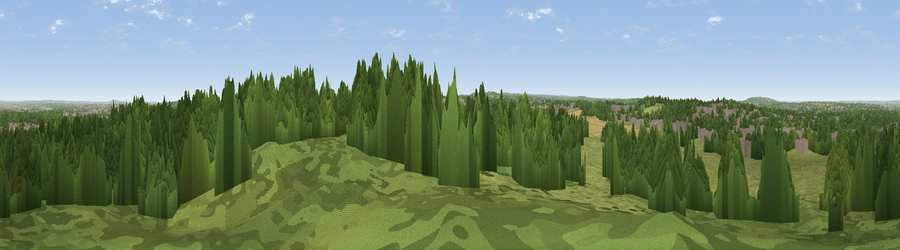

Viewpoint near Hextable
#23339 in England · top 19% of its area beats it · near HextableThe view, rendered

A 360° render of this exact spot computed from the terrain model, tree cover and land cover — summer colours, afternoon light, calibrated against photographs of famous viewpoints. Real trees, hedges and buildings will differ in detail.
The panorama
Grey silhouette: terrain skyline in each direction (720 bearings, Earth curvature and refraction included). Dashed green: skyline with trees (+15 m) and buildings (+8 m) as obstacles. Blue strip: how far the ground is visible on each bearing.
Where the view opens
Wedge length = distance to the farthest visible ground on that bearing (vegetation-aware). Rings at 10, 25 and 50 km.
What fills the view
58% woodland · 27% grassland · 9% built-up · 6% cropland
Angular shares of the visible panorama (visual magnitude), not map area. Landscape diversity 0.46 (0–1 Shannon).
Key numbers
More beautiful places nearby
The staircase of upgrades: each row has a higher view potential than everything closer. Driving times are estimates from straight-line distance, calibrated against real road routing — check an actual route before setting out.
| Place | Direction | Drive | Score |
|---|---|---|---|
| Viewpoint near Well Hill | SSW · 8 km | ~16 min | 54.4 |
| Viewpoint near Ebbsfleet Valley | E · 8 km | ~16 min | 56.1 |
| Viewpoint near Wrotham | SSE · 13 km | ~25 min | 65.1 |
| Viewpoint near Wrotham | SE · 15 km | ~27 min | 66.6 |
| Viewpoint near Shipbourne | SSE · 19 km | ~32 min | 69.1 |
| Box Hill | WSW · 37 km | ~56 min | 70.4 |
| Viewpoint near Box Hill Village | WSW · 37 km | ~56 min | 71.0 |
| Viewpoint near Coldharbour | SW · 46 km | ~67 min | 71.3 |
51.41922, 0.18424 · source: screening · position refined by local search. Computed location — check access rights before visiting.